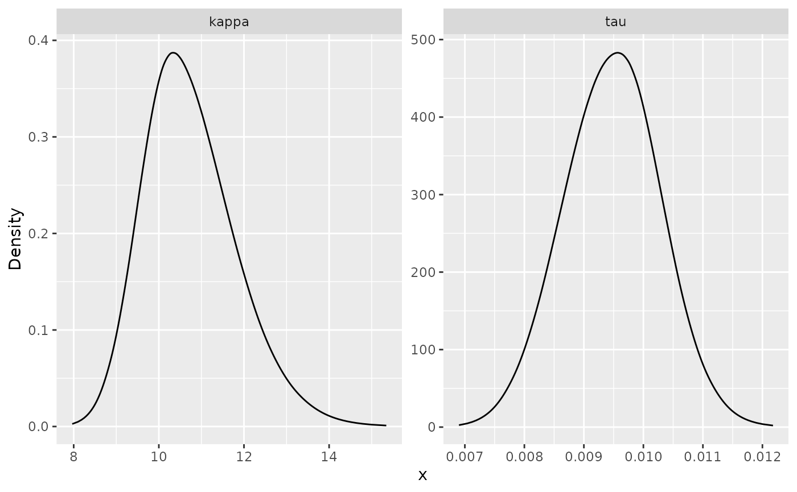

Intrinsic models in the rSPDE package
David Bolin
2024-10-07
Source:vignettes/intrinsic.Rmd
intrinsic.RmdIntroduction
In this vignette we provide a brief introduction to the intrinsic
models implemented in the rSPDE package.
Model specification and simulation
The intrinsic models are defined as
where
and
is the dimension of the spatial domain. These models are handled by
performing two rational approximations, one for each fractional
operator.
To illustrate these models, we begin by defining a mesh over :
library(fmesher)
bnd <- fm_segm(rbind(c(0, 0), c(2, 0), c(2, 2), c(0, 2)), is.bnd = TRUE)
mesh_2d <- fm_mesh_2d(
boundary = bnd,
cutoff = 0.04,
max.edge = c(0.05)
)
plot(mesh_2d, main = "")
We now use the intrinsic.matern.operators() function to
construct the rSPDE representation of the model.
library(rSPDE)
kappa <- 10
tau <- 0.01
alpha <- 2
beta <- 1
op <- intrinsic.matern.operators(kappa = kappa, tau = tau, alpha = alpha,
beta = beta, mesh = mesh_2d)To see that the rSPDE model is approximating the true
model, we can compare the variogram of the approximation with the true
variogram (implemented in variogram.intrinsic.spde()) as
follows.
Sigma <- op$A[,-1] %*% solve(op$Q[-1,-1], t(op$A[,-1]))
One <- rep(1, times = ncol(Sigma))
D <- diag(Sigma)
Gamma <- 0.5 * (One %*% t(D) + D %*% t(One) - 2 * Sigma)
point <- matrix(c(1,1),1,2)
Aobs <- spde.make.A(mesh = mesh_2d, loc = point)
vario <- variogram.intrinsic.spde(point, mesh_2d$loc[,1:2], kappa,
alpha = alpha, tau = tau,
beta = beta, L = 2, d = 2)
d = sqrt((mesh_2d$loc[,1]-point[1])^2 + (mesh_2d$loc[,2]-point[2])^2)
plot(d, Aobs%*%Gamma, xlim = c(0,0.5), ylim = c(0,0.2))
lines(sort(d),sort(vario),col=2, lwd = 2)
We can now use the simulate function to simulate a
realization of the field
:
u <- simulate(op,nsim = 1)
proj <- fm_evaluator(mesh_2d, dims = c(100, 100))
field <- fm_evaluate(proj, field = as.vector(u))
field.df <- data.frame(x1 = proj$lattice$loc[,1],
x2 = proj$lattice$loc[,2],
y = as.vector(field))
library(ggplot2)
library(viridis)
#> Loading required package: viridisLite
ggplot(field.df, aes(x = x1, y = x2, fill = y)) +
geom_raster() +
scale_fill_viridis()
By default, the field is simulated with a zero-integral constraint.
Let us now consider a simple Gaussian linear model where the spatial field is observed at locations, under Gaussian measurement noise. For each we have where are iid normally distributed with mean 0 and standard deviation 0.1.
To generate a data set y from this model, we first draw
some observation locations at random in the domain and then use the
spde.make.A() functions (that wraps the functions
fm_basis(), fm_block() and
fm_row_kron() of the fmesher package) to
construct the observation matrix which can be used to evaluate the
simulated field
at the observation locations. After this we simply add the measurment
noise.
n_loc <- 2000
loc_2d_mesh <- matrix(2*runif(n_loc * 2), n_loc, 2)
A <- spde.make.A(
mesh = mesh_2d,
loc = loc_2d_mesh
)
sigma.e <- 0.1
y <- A %*% u + rnorm(n_loc) * sigma.eThe generated data can be seen in the following image.
library(ggplot2)
library(viridis)
df <- data.frame(x1 = as.double(loc_2d_mesh[, 1]),
x2 = as.double(loc_2d_mesh[, 2]), y = as.double(y))
ggplot(df, aes(x = x1, y = x2, col = y)) +
geom_point() +
scale_color_viridis()
Fitting the model with R-INLA
We will now fit the model using our R-INLA implementation of
the rational SPDE approach. Further details on this implementation can
be found in R-INLA implementation of the
rational SPDE approach.
We begin by loading the INLA package and creating the
matrix, the index, and the inla.stack object. For now, the
model can only be estimated with
and
or
.
For these non-fractional models, we can use the standard INLA functions
to make the required elements.
library(INLA)
#> Loading required package: sp
#> This is INLA_24.10.02 built 2024-10-02 18:19:47 UTC.
#> - See www.r-inla.org/contact-us for how to get help.
#> - List available models/likelihoods/etc with inla.list.models()
#> - Use inla.doc(<NAME>) to access documentation
mesh.index <- inla.spde.make.index(name = "field", n.spde = mesh_2d$n)
st.dat <- inla.stack(data = list(y = as.vector(y)), A = A, effects = mesh.index)We now create the model object.
rspde_model <- rspde.intrinsic.matern(mesh = mesh_2d, alpha = alpha)Finally, we create the formula and fit the model to the data:
f <- y ~ -1 + f(field, model = rspde_model)
rspde_fit <- inla(f,
data = inla.stack.data(st.dat),
family = "gaussian",
control.predictor = list(A = inla.stack.A(st.dat)))We can get a summary of the fit:
summary(rspde_fit)
#> Time used:
#> Pre = 0.379, Running = 29.9, Post = 0.194, Total = 30.5
#> Random effects:
#> Name Model
#> field CGeneric
#>
#> Model hyperparameters:
#> mean sd 0.025quant 0.5quant
#> Precision for the Gaussian observations 96.19 3.471 89.55 96.12
#> Theta1 for field -4.52 0.088 -4.70 -4.52
#> Theta2 for field 2.14 0.123 1.89 2.14
#> 0.975quant mode
#> Precision for the Gaussian observations 103.21 95.97
#> Theta1 for field -4.35 -4.52
#> Theta2 for field 2.38 2.14
#>
#> Marginal log-Likelihood: 1333.95
#> is computed
#> Posterior summaries for the linear predictor and the fitted values are computed
#> (Posterior marginals needs also 'control.compute=list(return.marginals.predictor=TRUE)')To get a summary of the fit of the random field only, we can do the following:
result_fit <- rspde.result(rspde_fit, "field", rspde_model)
summary(result_fit)
#> mean sd 0.025quant 0.5quant 0.975quant mode
#> tau 0.0108968 0.000959225 0.00913235 0.0108382 0.0129023 0.0107535
#> kappa 8.5496100 1.050570000 6.65440000 8.4933600 10.7748000 8.3831600
tau <- op$tau
result_df <- data.frame(
parameter = c("tau", "kappa"),
true = c(tau, kappa), mean = c(result_fit$summary.tau$mean,
result_fit$summary.kappa$mean),
mode = c(result_fit$summary.tau$mode, result_fit$summary.kappa$mode)
)
print(result_df)
#> parameter true mean mode
#> 1 tau 0.01 0.01089676 0.01075353
#> 2 kappa 10.00 8.54961433 8.38315860Kriging with R-INLA implementation
Let us now obtain predictions (i.e., do kriging) of the latent field on a dense grid in the region.
We begin by creating the grid of locations where we want to compute
the predictions. To this end, we can use the
rspde.mesh.projector() function. This function has the same
arguments as the function inla.mesh.projector() the only
difference being that the rSPDE version also has an argument
nu and an argument rspde.order. Thus, we
proceed in the same fashion as we would in R-INLA’s standard SPDE
implementation:
projgrid <- inla.mesh.projector(mesh_2d,
xlim = c(0, 2),
ylim = c(0, 2)
)This lattice contains 100 × 100 locations (the default). Let us now calculate the predictions jointly with the estimation. To this end, first, we begin by linking the prediction coordinates to the mesh nodes through an matrix
A.prd <- projgrid$proj$AWe now make a stack for the prediction locations. We have no data at
the prediction locations, so we set y= NA. We then join
this stack with the estimation stack.
ef.prd <- list(c(mesh.index))
st.prd <- inla.stack(
data = list(y = NA),
A = list(A.prd), tag = "prd",
effects = ef.prd
)
st.all <- inla.stack(st.dat, st.prd)Doing the joint estimation takes a while, and we therefore turn off
the computation of certain things that we are not interested in, such as
the marginals for the random effect. We will also use a simplified
integration strategy (actually only using the posterior mode of the
hyper-parameters) through the command
control.inla = list(int.strategy = "eb"), i.e. empirical
Bayes:
rspde_fitprd <- inla(f,
family = "Gaussian",
data = inla.stack.data(st.all),
control.predictor = list(
A = inla.stack.A(st.all),
compute = TRUE, link = 1
),
control.compute = list(
return.marginals = FALSE,
return.marginals.predictor = FALSE
),
control.inla = list(int.strategy = "eb")
)We then extract the indices to the prediction nodes and then extract the mean and the standard deviation of the response:
id.prd <- inla.stack.index(st.all, "prd")$data
m.prd <- matrix(rspde_fitprd$summary.fitted.values$mean[id.prd], 100, 100)
sd.prd <- matrix(rspde_fitprd$summary.fitted.values$sd[id.prd], 100, 100)Finally, we plot the results. First the mean:
field.pred.df <- data.frame(x1 = projgrid$lattice$loc[,1],
x2 = projgrid$lattice$loc[,2],
y = as.vector(m.prd))
ggplot(field.pred.df, aes(x = x1, y = x2, fill = y)) +
geom_raster() + scale_fill_viridis()Then, the marginal standard deviations:
field.pred.sd.df <- data.frame(x1 = proj$lattice$loc[,1],
x2 = proj$lattice$loc[,2],
sd = as.vector(sd.prd))
ggplot(field.pred.sd.df, aes(x = x1, y = x2, fill = sd)) +
geom_raster() + scale_fill_viridis()Extreme value models
When used for extreme value statistics, one might want to use a
particular form of the mean value of the latent field
,
which is zero at one location
and is given by the diagonal of
for the remaining locations. This option can be specified via the
mean.correction argument of
rspde.intrinsic.matern:
rspde_model2 <- rspde.intrinsic.matern(mesh = mesh_2d, alpha = alpha,
mean.correction = TRUE)We can then fit this model as before:
f <- y ~ -1 + f(field, model = rspde_model2)
rspde_fit <- inla(f,
data = inla.stack.data(st.dat),
family = "gaussian",
control.predictor = list(A = inla.stack.A(st.dat)))To see the posterior distributions of the parameters we can do:
result_fit <- rspde.result(rspde_fit, "field", rspde_model2)
posterior_df_fit <- gg_df(result_fit)
ggplot(posterior_df_fit) + geom_line(aes(x = x, y = y)) +
facet_wrap(~parameter, scales = "free") + labs(y = "Density")